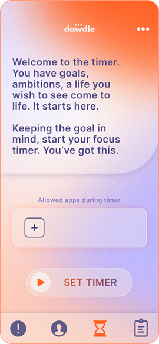
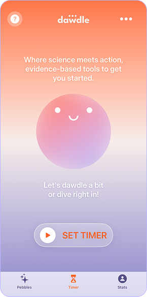
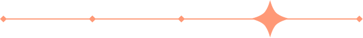
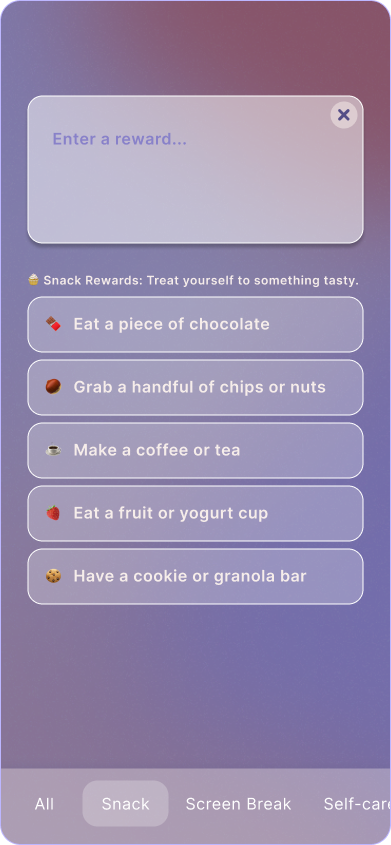
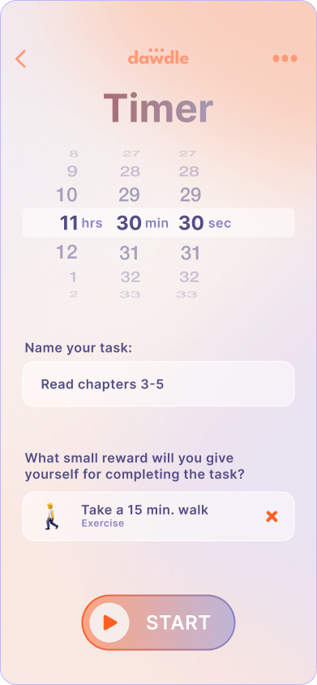
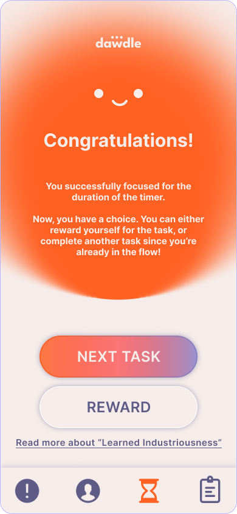

Hit me up!
Anti-procrastination app, backed by science
Procrastination is an emotional regulation issue, not a time management issue.
How might we overcome procrastination by addressing emotion?
Summer 2025
The Problem
reduce the resistance people feel when opening a productivity app and overcome procrastination by addressing overwhelmed emotions?
Users said they were avoiding to open the app because they were already intimidated by the tasks they were procrastinating on.
So, to create a safe and welcoming environment, we created Pebbles, a joyful and energetic mascot. I collaborated with the founder to define Pebbles’ personality and role, and integrated the character into the design system throughout the app.

Timer Before

Timer with Pebbles
We traded text-heavy screens that increases mental load for more animations and interactions with Pebbles to create a friendlier experience. New screens increased clarity and reduced intimidation.
Onboarding Before
Onboarding with Pebbles
Users procrastinate for different reasons and require unique solutions for each situation.
Pebbles identifies why users feel stuck such as fear of failure, feeling overwhelmed, etc. and guides them through customized strategies that address why, regulates emotion, and encourages users to overcome the initial barrier of starting.
Pebbles makes the AI feel like a progress-oriented supportive coach that listens and tailors to user’s situation.

We also asked how might we design a timer flow that removes mental & emotional friction and maintain momentum?



I realized that designing to influence emotion to promote motivation and focus goes beyond aesthetics, like picking a color palette that is both soothing and energizing, or using flowy shapes and gradients. Studying how Duolingo and Finch utilize their mascots to create an encouraging experience showed me how designing Pebbles was pivotal to the emotional experience of using Dawdle.
Designing Pebbles also introduced me to system designing. Pebbles first feature started as an AI chat bot, but quickly realized its potential as a mascot that helps users onboard and cheerlead users in the background throughout multiple screens.
Hit me up!